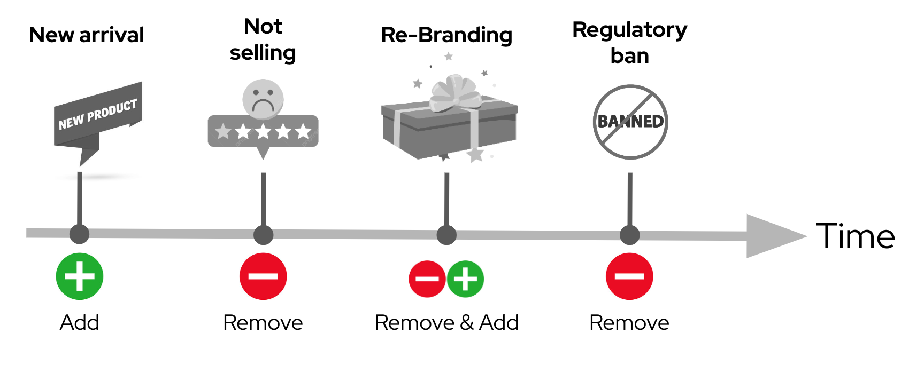

Solution Pattern: Edge to Core Data Pipelines for AI/ML
Data is created and required in unusual and challenging locations. Locations such as the International Space Station, connected vehicles, manufacturing floors, ships at sea, or the local pharmacy. Although data has historically been hosted in the central data center or cloud, many crucial choices must now be made at the edge.
To reach the human level, the responses and decisions made by machines and applications need to operate in milliseconds or even microseconds. Waiting for more than 100 ms by sending data to the cloud could be the difference between a good or a poor customer experience.
When analyzing user data at the edge, such as that from Internet of Things (IoT) devices or industrial machines, the problem becomes dealing with massive amounts of data. Every device generates vast amounts of data every second, which is only useful if it can be stored or analyzed. This data becomes much more useful when used locally and subsequently moved to the open hybrid cloud’s core data center.
This solution pattern provides an architecture solution for scenarios in which edge devices generate image data, which must be collected, processed, and stored at the near edge before being utilized to train AI/ML models at the core data center or cloud.
1. Use cases
The interaction of AI/ML and Edge Computing occurs in a variety of businesses. For example, in the retail industry, customer behavior and patterns may be used to determine promotions, or in a manufacturing facility, where data inference can help improve processes where machines are failing and products are not up to standard, and so on. The basic premise is that you may collect data and then infer from it in order to make decisions based on it.
Some common use cases for edge to cloud data pipelines for artificial intelligence and machine learning include:
-
Preprocessing and feature extraction of data at the edge for improved performance and lower latency
-
Training and inference of machine learning models on data collected at the edge
-
Processing and analyzing sensor data for predictive analytics
-
Streaming data analysis and real-time decision making
There are many potential business drivers for a company to use edge analytics. Some of the most common reasons include wanting to gain insights into customer behavior, improve operational efficiency, or better understand the performance of specific products or services. Additionally, companies may use edge analytics to detect and prevent fraud or to monitor and manage risk.
-
Reduce time to insights -Improve accuracy of insights
-
Enable real-time decision making
-
Faster and more accessible data collection
-
Reduce costs associated with data collection and analysis
2. The story behind this solution pattern
Within Artificial Intelligence (AI), edge analytics focuses on inference (predicting), meaning applying a previously trained model to infer a result. Depending on how critical the data is, it will dictate if it needs to be processed in real-time or stored for later analysis. Storage becomes another critical variable depending on costs, availability, or compliance requirements.
For Inferencing data by a trained model, we usually deploy applications containing the model on the devices or edge servers close to the site floor. At the same time, other processes select, transform (for data privacy and protection compliance) and transfer the generated raw data to create the datasets that will train the models to the core data center or cloud, where more computing power and specialized processors are available.
2.1. An ever-evolving product catalogue
The solution pattern is supported by the narrative of a retail store that began using various sorts of devices to collect images of their products at store locations in order to offer customers with the most up-to-date information, such as the pricing and promotions linked. They must collect photos, prepare them for transmission to the core for training an AI Vision model, and then deploy it as an application that may be deployed in the remote location server to respond inference queries from consumers and their own kiosks.
The challenge ahead in the presented retail use case is the need to continuously update the catalogue of products which customers explore from their smart devices. Products on the store’s shelves are changing all the time. New products are added on a daily/weekly basis while other products, not selling well, are removed to free up shelf space. Sometimes articles change their packaging and appearance. Also government regulations may, for example, enforce prohibitions on food ingredients, forcing the retirement of certain products.

These fast-paced product catalogue updates require a sophisticated platform capable of absorbing the constant demand to acquire, train, deliver and hot deploy new AI model versions at a fast cadence, with a high degree of automatism and lower levels of human intervention.
2.2. Enabling edge data processing with AI/ML
You can use the Edge to Core Pipelines pattern to collect, organize, process, and monitor edge data on-site. You can process your data locally, send it to your data center, cloud, or data lake, or load it into on-premises applications. Because you can process and route your data locally, you can choose to send only aggregated data to the cloud, optimizing your bandwidth usage and cloud storage costs.
The following is a list of commonly used protocols in edge devices to share data with a gateway or local server:
-
HTTP/HTTPS
-
MQTT
-
AMQP
-
RTSP
-
WebRTC
| The solution pattern demonstration employs REST HTTP clients and MQTT over websockets. However, as previously stated, the implementation framework provides out-of-the-box access to a large number of protocols while also allowing teams to implement proprietary ones. |
2.3. Alternatives
There are a few current alternatives to edge analytics, but they are losing traction for a few reasons. An option is to use cloud-based analytics, which requires a constant internet connection and can be expensive. Another is using a data warehouse, which can be slow and difficult to set up on the edge.
3. The Solution
This solution pattern is divided into four major stages that cover various aspects of the end-to-end AI/ML lifecycle:
-
Data Acquisition
-
Data Preparation & Modelling
-
Application Development & Delivery
-
Edge/NearEdge ML Inferencing
3.1. Data Acquisition
The first stage begins with the acquisition of images. For example, the check out kiosks can take pictures of every item that the cashier scans. Each image is then delivered over MQTT to a message broker, who passes it on to the processing application, which prepares the data for transmission.
To send data from the edge to the core, depending on the use case, we can use an Apache Kafka topic for example, to allow other streaming applications perform additional parallel processing by benefiting from the platform’s streaming and repeatability. In this image-based example however we find preferable to move images via traditional HTTP (still is data streaming).
|
Kafka is usually not the right technology to store and process large payloads (images, videos, big files, etc.) as a whole. It can however complement other strategies to integrate, coordinate, orchestrate or preprocess the data, for example. |
3.2. Data Preparation & Modelling
Once the data is available in the core data center or in the cloud, the imagery is cleaned up by the processing application to remove sensitive or private info and resized for management purposes. Then enterprise data analysts can utilize OpenShift Data Science to build a model that enables the application to detect objects.
3.3. Application Development & Delivery
Once trained, a model can be saved as part of an application or service that provides an API for inferencing. This application must be built and delivered as part of the organization’s CI/CD process to ensure that security policies are followed.
3.4. Edge/NearEdge ML inferencing
Finally, once the application is deployed at the edge (or near edge), some of the event-driven architecture can be reused for customers. Consumer devices use a mobile application that enables users to shoot photos with their phones and subsequently upload those photos to the event broker. A processing service retrieves the image from the queue and transmits it to the inference service, which returns the information in the image. If, for whatever reason, the image cannot be detected. It will save the data locally in order to include it to the future set of data that will be transferred to the core for further model improvement.
See below a simplified representation of the solution:

| Please see the Architecture section for more extensive architecture diagrams. |
4. Explore more solution patterns
It’s time to boost your cloud-native application architectural design with bleeding-edge technology backed by open-source software. Explore the use cases and learn recommended solutions for each of these challenges:
-
Application Modernization
-
DevOps
-
Managed Openshift
-
Intelligent Applications